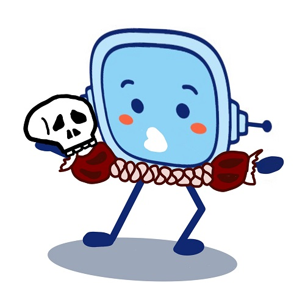
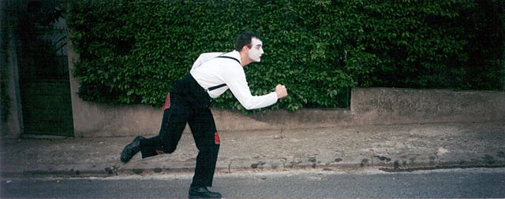
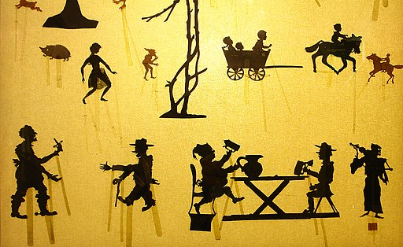
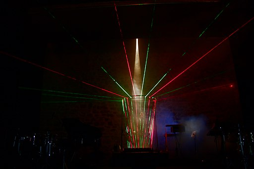
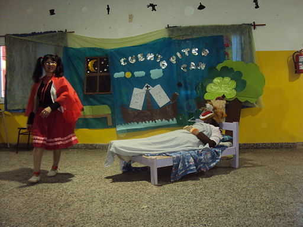

A las buenas, buenas,
Como ya sabes un poco más sobre el cuidado del medioambiente, ahora te toca conocer más a fondo lo que es una obra teatral y los tipos de obras que hay. El mundo del teatro es apasionante, pues te permite desarrollar toda tu creatividad. Existen miles de formas de representar un teatro. A continuación te mostramos algunas de ellas.
Esta información te ayudará a superar el reto final.
¿Qué es una obra teatral?
Una obra de teatro primero es una obra literaria, un texto. El autor o autora la escribe en forma de guión y se representa a través de personajes.
Toda obra teatral tiene unos objetivos específicos. Puede haberse escrito para entretener, dar risa, emocionar, protestar, enseñar valores, etc. Te mostramos los géneros de teatro que existen.
Géneros del teatro.
Tragedia
Es el más tradicional y representativo de la historia del teatro. Suelen tener finales muy tristes y trágicos. Algunas características son las siguientes:
- La tragedia alcanzó su máximo esplendor en la Roma clásica, pero el Siglo de Oro le sirvió para renacer y adaptarse a nuevos tiempos.
- Los personajes heroicos e ilustres son los protagonistas principales de las obras trágicas.
- Generalmente, son obras con un final desolador: la persona protagonista suele caer en desgracia.
- La destrucción, la muerte y el desamor son los temas principales.
Ejemplo:
Accede a la transcripción textual del vídeo. Se abre en otra ventana.
Comedia
Es el género teatral más divertido. Su objetivo principal es transmitir optimismo y alegría a los espectadores. Las obras de teatro de comedia utilizan el humor para tratar cuestiones o aspectos de la vida cotidiana con la risa como eje principal, sacando carcajadas y conectando con el público.
Ejemplo:
Accede a la transcripción textual del vídeo sobre la Comedia. Se abre en otra ventana.
Drama
El drama representa diferentes escenas de la vida cotidiana, pero mostrando los pensamientos, sentimientos y preocupaciones de los personajes.
Ejemplo:
Accede a la transcripción textual del vídeo. Se abre en otra ventana.
Musical
Los musicales suelen contar una historia entera, con la diferencia de que intercala diálogos entre personajes y situaciones sin música alguna, con bailes y canciones de los actores y actrices que participan. Son muy bonitos y vistosos.
El Rey León es uno de los musicales más conocidos y que se puede ver en Madrid. A nivel mundial, también hay otros musicales famosos como el de “El Fantasma de la Ópera” o “Cats”. Es un género teatral muy valorado en la actualidad.
Ejemplo:
Accede a la transcripción textual del vídeo. Se abre en otra ventana.
Ópera
Su estilo es clásico y serio. Es parecido al género musical pero más culto y formal. Los cantantes son expertos en canto lírico. Tratan temas legendarios y románticos a diferencia de los musicales, cuya temática suele ser más alegre combinando música con bailes.
Ejemplo:
Accede a la transcripción textual del vídeo. Se abre en otra ventana.
Monólogo
Es el único género en el que solo actúa una persona que habla durante la obra. La temática puede ser alegre o triste.
Pueden existir más personajes en los monólogos, pero estarán mudos: no pronunciarán ninguna palabra, por lo que se limitarán a ser acompañantes de la narración del monologuista.
Ejemplo:
Accede a la transcripción textual del vídeo. Se abre en otra ventana.
Tragicomedia
Es el género que busca tanto la tristeza de los espectadores, como sacarles una sonrisa o carcajadas. Juega con sentimientos negativos y positivos durante una misma obra de teatro. Una obra muy representativa de la tragicomedia es La Celestina, atribuida al dramaturgo Fernando de Rojas.
Ejemplo
Accede a los subtítulos del vídeo sobre la Tragicomedia. Se abre en otra ventana.


Lectura facilitada
Tú ya conoces el cuidado del medioambiente.
Ahora tú conoces mejor las obras teatrales.
También los distintos tipos de obras de teatro.
El teatro permite aumentar la creatividad.
Hay miles de formas de representación teatral.
Ahora yo te enseño algunas de estas formas.
Esta información te ayuda a ti con el reto final.
¿Qué es una obra teatral?
Una obra de teatro es una obra literaria.
El autor o autora escribe el guion del teatro.
Los personajes representan el guion del teatro.
Toda obra teatral tiene unos objetivos claros.
Los objetivos pueden ser muy diferentes:
- Entretener.
- Dar risa.
- Emocionar.
- Protestar.
- Enseñar valores.
- Otros objetivos.
Ahora te muestro los distintos géneros de teatro.
GÉNEROS DEL TEATRO.
Tragedia
Es el teatro más tradicional y común de todos.
Los finales de este teatro suelen ser muy tristes.
Algunas de sus características son las siguientes:
- Este teatro tuvo su mayor desarrollo en la Roma antigua.
En el Siglo de Oro también tuvo gran desarrollo.
El Siglo de Oro es un período de tiempo con ese nombre.
En este tiempo la tragedia sufrió varios cambios.
· - Los protagonistas son personajes heróicos e importantes.
· - El final de la tragedia suele ser siempre muy triste.
El personaje protagonista suele tener un final malo.
· - Los temas principales son la muerte y la destrucción.
Otro de los temas principales suele ser el desamor.
·
Aquí tú puedes ver un ejemplo de teatro de tragedia:
Accedea la transcripción textual del vídeo. Se abre en otra ventana.
Comedia
Es el tipo de teatro más divertido de todos.
Su objetivo principal es transmitir alegría.
También transmitir esperanza al público.
Estas obras usan el humor en sus historias.
Cuentan historias o cosas de la vida cotidiana.
La risa es el elemento principal de este teatro.
Con su humor el teatro conecta con el público.
Aquí tú puedes ver un ejemplo de teatro de comedia:
Accede a la transcripción textual del vídeo. Se abre en otra ventana.
Drama
Representa diferentes escenas de la vida cotidiana.
En él los personajes muestran sus pensamientos.
Además muestran sus sentimientos y preocupaciones.
Aquí tú puedes ver un ejemplo de teatro de drama:
Accede a la transcripción textual del vídeo. Se abre en otra ventana.
Musical
Los musicales suelen contar una historia entera.
Los musicales tienen diálogos de personajes.
También tienen otras situaciones sin música.
Estas partes las mezclan con bailes y canciones.
Bailes y canciones de sus actores y actrices.
Los musicales son muy bonitos y llamativos.
“El Rey León” es un musical muy famoso.
Es un musical que tú puedes ver en Madrid.
Otro musical famoso en el mundo es “Cats”.
Y otro musical es “El Fantasma de la Ópera”.
Ahora es un tipo de teatro muy valorado.
Aquí tú puedes ver un ejemplo de teatro musical:
Accede a la transcripción textual del vídeo. Se abre en otra ventana.
Ópera
Este es un teatro con un estilo clásico y serio.
Es parecido al musical pero más culto y formal.
Sus actores y actrices son cantantes expertos.
Ellos y ellas son expertos en canto lírico.
Este teatro trata temas legendarios y románticos.
Los musicales tienen temas más alegres.
Aquí tú puedes ver un ejemplo de ópera teatral:
Accede a la transcripción textual del vídeo. Se abre en otra ventana.
Monólogo
En este tipo de teatro solo actúa una persona.
Esta persona habla durante todo el teatro.
El tema del monólogo puede ser alegre o triste.
El monólogo puede tener más personajes.
Pero todos estos personajes están mudos.
Ellos y ellas guardan silencio toda la obra.
Estos personajes acompañan al protagonista.
Aquí tú puedes ver un ejemplo de monólogo:
Accede a la transcripción textual del vídeo. Se abre en otra ventana.
Tragicomedia
Es un teatro que mezcla dos emociones distintas.
Aborda tanto temas tristes como temas graciosos.
Sus temas tratan sentimientos negativos y positivos.
El público pasa de la tristeza a la alegría y el humor.
Una famosa obra de tragicomedia es “La Celestina”.
Fernando de Rojas es el escritor de “La Celestina”.
Aquí tú puedes ver un ejemplo de tragicomedia:


TEATROS PARA NIÑOS Y NIÑAS.
Teatro con marionetas
Los personajes son muñecos a los que se les da vida a través del movimiento y la voz de una persona. Se mueven mediante un sistema de hilos o palillos.
Los personajes deben expresarse de forma sencilla, con diálogos cortos y con un lenguaje adaptado a la edad de los espectadores.
Accede a la transcripción textual del vídeo. Se abre en otra ventana.
Teatro con títeres
Son similares a las marionetas pero suelen ser más sencillos. Carlos Angoloh (1990) describió los siguientes modelos de títeres:
- Títeres planos: Se fabrican con cartón y cartulina o folios de colores y se prenden con un palito de madera o pajita.
- Títeres de dedo: Este títere se hace con un guante a los que se le pone ojos y la boca, ya sean pegados o pintados.
- Títeres de manopla: Se puede hacer con calcetines y mangas.
- Títeres de guantes: Se pueden confeccionar con plastilina, bolas de papel, de corcho, de papel o tela. Tanto para el teatro con marionetas o títeres se utilizará un teatrino.
Las máscaras
Una forma de actuar y no pasar vergüenza es utilizando máscaras. Los materiales para crear máscaras son: papel, cartón, vendas, pasta de papel.
Tipos de máscaras
- Medias máscaras: deja libre la boca y permiten hablar con comodidad y claridad.
- Máscaras completas: cubren la cara completamente.
- Máscaras plegadas: son máscaras que se hacen a modo de poliedro de cartulina.
- Máscaras de bolsa: puedes hacerla de forma muy sencilla, decorando una bolsa de cartón.
Pantomima o mímica
Los actores y actrices no pueden hablar, solo se emplean los gestos.
La persona que se dedica a la pantomima como arte recibe el nombre del mimo. La clave en la actuación de los mimos es no usar el lenguaje oral durante las actuaciones.

Teatro de sombras
Espectáculo que consiste en la creación de efectos ópticos. Para desarrollarlo se necesita una lámpara y la pared (en la cual se puede poner una sábana o pantalla) Por ejemplo: con las manos se hacen figuras de animales y se proyectan las sombras.

Teatro interactivo
Es un tipo de teatro en el que el público puede participar. También gracias a la tecnología se pueden utilizar proyectores, ordenadores, láser, imágenes tridimensionales, realidad virtual y vídeos para mezclarlas con el escenario y actores para obtener una experiencia innovadora.

Representación de cuentos
Pueden ser fragmentos de cuentos o escenas que a los niños y niñas les hayan resultado significativas. Se pueden preparar los escenarios, los disfraces y hacer el reparto de papeles y el guión.

Teatro negro
Es un teatro en el que los actores están vestidos completamente de negro y actúan sobre un fondo negro. Esto hace que el espectador solo vea lo que los actores desean mostrar: objetos iluminados, artículos fosforescentes flotando son algunos de los elementos que lo hacen especial.
Ejemplo:
Accede a la transcripción textual del vídeo. Se abre en otra ventana.
Kamishibai
Es un teatro de origen japonés. Es una forma de contar cuentos a través de la colocación de distintas láminas sobre un soporte hecho de madera generalmente.

Lectura facilitada
TEATROS PARA NIÑOS Y NIÑAS.
Teatro con marionetas
En este teatro los personajes son unos muñecos.
Los muñecos se mueven con unos hilos y palillos.
Los actores y actrices dan la voz a los muñecos.
Los personajes usan expresiones sencillas.
También diálogos cortos y un lenguaje adaptado.
Adaptado a la edad del público de cada teatro.
En el teatro de marionetas se utiliza un teatrino.
Un teatrino es el pequeño teatro de las marionetas.
Accede a la transcripción textual del vídeo. Se abre en otra ventana.
Teatro con títeres
Es un teatro parecido al teatro de marionetas.
Es un teatro más sencillo que el de marionetas.
Carlos Angoloh describió en 1990 estos modelos:
- Títeres planos.
Son fabricados con cartón, cartulina o folios de colores.
Se sujetan con un palito de madera o con una pajita.
· - Títeres de dedo.
Son títeres fabricados usando como material un guante.
El guante tiene ojos y boca pintados o pegados.
· - Títeres de manopla.
Son títeres fabricados con calcetines o con mangas.
· - Títeres de guantes.
Títeres hechos con plastilina, bolas de papel o corcho.
También están hechos con piezas de papel o con tela.
·
En el teatro de títeres se utiliza un teatrino.
Un teatrino es el pequeño teatro de los títeres.
Las máscaras
Las personas más vergonzosas pueden usar máscaras.
Pueden usar máscaras en sus diferentes actuaciones.
Tú puedes hacer máscaras con papel o con cartón.
También puedes utilizar vendas o pasta de papel.
Existen diferentes tipos de máscaras:
- Medias máscaras.
Dejan libre la zona de la boca.
Permiten hablar con comodidad y claridad.
· - Máscaras completas.
Cubren toda la cara.
· - Máscaras plegadas.
Su forma es un poliedro de cartulina.
· - Máscaras de bolsa.
Son bolsas de cartón decoradas.
·
Pantomima o mímica
En este teatro los personajes guardan silencio.
Las actrices y los actores solo usan los gestos.
Los profesionales de este teatro se llaman mimos.
Los mimos nunca emplean el lenguaje oral.
Teatro de sombras
Es un teatro que utiliza diferentes efectos ópticos.
Los efectos ópticos son engaños a nuestra vista.
Estos teatros utilizan una lámpara y una pared.
También pueden usar una sábana o una pantalla.
Un ejemplo es hacer figuras animales con las manos.
Figuras que luego aparecen en las sombras
Teatro interactivo
Obra de teatro en la que el público puede participar.
También pueden usar diferentes tecnologías.
Tecnologías como proyectores, ordenadores o láser.
También imágenes tridimensionales o realidad virtual.
Incluso mezclar vídeos con el escenario y los actores.
Representación de cuentos
Son obras basadas en fragmentos de varios cuentos.
Son escenas atractivas para los niños y las niñas.
Tienen escenarios, guión y disfraces preparados.
Teatro negro
Teatro con actores vestidos enteros de color negro.
Los actores y actrices actúan sobre un fondo negro.
El público o los espectadores solo ven unas cosas.
Las cosas que quieren enseñar los actores.
Cosas como objetos iluminados o fosforescentes.
Aquí tienes un ejemplo muy claro de teatro negro:
Accede a la transcripción textual del vídeo. Se abre en otra ventana.
Kamishibai
Teatro de origen japonés que cuenta cuentos.
Los cuentos son contados con distintas láminas.
Láminas colocadas sobre un soporte de madera.
Aquí tú puedes ver ejemplo muy claro de kamishibai: